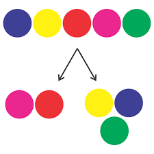

Tjener
Tar imot forsespørselen og behandler den. Mye info=dele opp
informasjonen i flere mindre pakker og sender det. TCP gjør det om
til data med informasjon IP-en trenger og ethernettet sender dataen
med IP-en til et ruternett. Den sender det tilbake til
klienten igjen.
Pakkene finner den raskeste veien tilbake til klienten.
